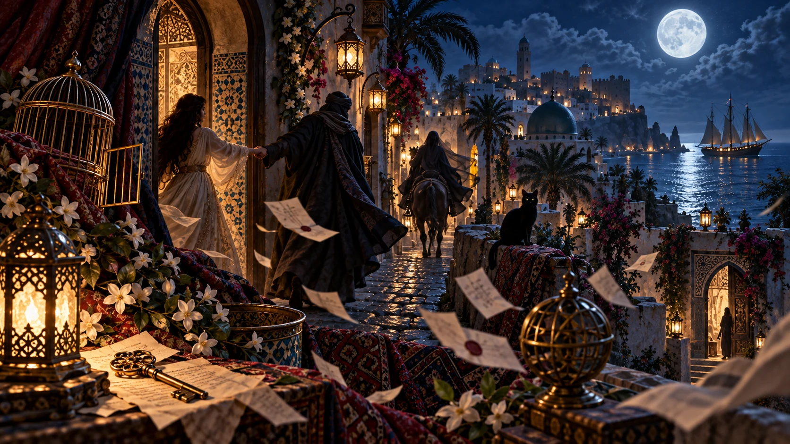

La mano
È il punto in cui il sogno cambia direzione. Una mano che conduce può rappresentare fiducia, dipendenza, attrazione oppure la sensazione che una forza esterna stia decidendo il percorso al nostro posto.
Una collaborazione da sogno
Tavole oniriche interattive
Quando il destino ti prende per mano e ti conduce altrove


Tocca i punti luminosi della tavola per seguirne i simboli.
È il punto in cui il sogno cambia direzione. Una mano che conduce può rappresentare fiducia, dipendenza, attrazione oppure la sensazione che una forza esterna stia decidendo il percorso al nostro posto.
Appartiene al territorio dell’intuizione e di ciò che non è ancora completamente visibile. Nel sogno illumina il cammino senza spiegarlo: mostra abbastanza per proseguire, non abbastanza per sapere dove arriveremo.
Rappresenta movimento, energia e passaggio. Se si allontana può indicare che qualcosa è già cominciato e che il cambiamento procede anche mentre cerchiamo ancora di comprenderlo.
Sono parole non ancora ricomposte. Possono richiamare notizie, ricordi, spiegazioni mancanti oppure frammenti di una storia che chiedono di essere letti nel loro insieme.
È la possibilità di aprire ciò che è chiuso. In un sogno di rapimento può suggerire una soluzione nascosta, l’accesso a una verità oppure il fatto che esista ancora un margine di scelta.
Rappresenta costrizione, limite e perdita di libertà. Ma una gabbia aperta introduce un’ambiguità importante: ciò che trattiene potrebbe non essere più chiuso come pensiamo.
È l’altrove per eccellenza: vasto, mutevole e impossibile da controllare. Può parlare del desiderio di partire, della paura di perdersi oppure dell’ingresso in un territorio emotivo sconosciuto.
È una partenza già possibile. A differenza del mare, che rappresenta l’ignoto, la nave gli dà una direzione: qualcosa può portarci lontano, volontariamente oppure perché gli eventi hanno già preso il largo.
Osserva senza intervenire. Può rappresentare intuito, prudenza e capacità di percepire ciò che sfugge agli altri. Nel sogno è una presenza silenziosa che sembra sapere più di quanto racconti.
Essere rapiti in sogno non significa necessariamente sognare una violenza. Molto spesso il centro della scena è la perdita della possibilità di decidere: qualcuno, qualcosa o persino una parte di noi sembra aver preso in mano il viaggio.
Il sogno può nascere quando sentiamo che gli eventi procedono troppo velocemente, quando una relazione esercita una forte attrazione oppure quando una nuova situazione ci trascina oltre il territorio conosciuto.
Ma il rapimento possiede anche un significato più antico e narrativo: essere portati via significa attraversare una soglia. Nei miti e nelle fiabe chi scompare dal proprio mondo raramente ritorna identico.
Può rappresentare una parte sconosciuta della propria vita o della propria personalità che sta acquistando forza. Più che l’identità del rapitore conta spesso l’emozione provata davanti a lui.
Può richiamare una relazione nella quale sentiamo di avere ceduto troppo spazio oppure, al contrario, un legame capace di esercitare su di noi una forte attrazione.
Il sogno introduce un’ambiguità: forse non stiamo soltanto subendo il viaggio. Potrebbe esserci una parte di noi che desidera scoprire cosa esiste oltre la soglia.
Può indicare il bisogno di recuperare autonomia oppure la resistenza davanti a un cambiamento percepito come troppo rapido o imposto.
Rappresenta l’ingresso in una fase non ancora definita. Il luogo di destinazione, più del viaggio stesso, può suggerire ciò che il sogno sta tentando di raccontare.
Può segnalare la fine di una fase di costrizione oppure la scoperta che un limite apparentemente invalicabile possiede una via d’uscita.
Può rappresentare il desiderio di trattenere una persona, un’opportunità o una parte della propria vita che temiamo di perdere. Può anche indicare la necessità di controllare qualcosa che percepiamo come instabile.
Può riflettere impotenza, preoccupazione oppure la sensazione di vedere qualcosa allontanarsi senza riuscire a intervenire.
Conoscevo la persona che mi conduceva via?
Provavo paura oppure curiosità?
Cercavo di resistere o la seguivo?
Dove sembrava portarmi?
C’era una possibilità di fuga?
Al risveglio avevo la sensazione di aver perso qualcosa oppure di aver attraversato una soglia?
Nel sogno qualcuno viene condotto oltre una soglia. Nella letteratura, a volte, accade lo stesso: il lettore viene trascinato in un mondo lontano prima ancora di sapere se può fidarsi della voce che lo guida.
Ben Ramar nasce all’inizio del Novecento dentro lo sguardo europeo sul Marocco. Tra mistero, avventura e immaginario coloniale, oggi possiamo seguirne le tracce senza confondere il racconto con la realtà che pretendeva di descrivere.
Sali sul Tappeto e segui Ben RamarTavola realizzata con intelligenza artificiale per Il Tappeto Volante · Viaggi da Sogno